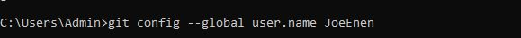
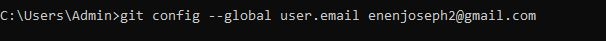
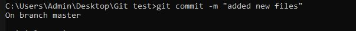

Git is a Version Control System (VCS) that helps developers track changes, collaborate efficiently, and manage project history. It allows multiple people to work on the same code without overwriting each other's work. Even if you're coding solo, Git acts as a safety net, letting you revert to previous versions if needed.
What is are version control systems?
Version Control Systems are tools that tracks changes in files over time. Git, as a version control system allows multiple people to work on the same project simultaneously without overwriting each other's work.
Other Version control systems
Apache Subversion (SVN) - An older but still used centralized VCS.
Mercurial - Similar to Git but with a simpler interface.
Perforce - Popular in enterprise environments, especially for game development.
Bazaar - Another distributed VCS with an emphasis on user-friendly workflows.
However, in this blog, we'll be focusing specifically on Git and GitHub, exploring how they revolutionize collaboration and workflow management.
Git Installation
Before installing git, it is important to first check whether you have it installed. To do this, you open your cmd terminal and input the code: "git --version"
Image 1: Confirming git
If your git is installed, you will see a git version as displayed on the figure. If it's not, please follow the following:
Step 1
Go to the official Git website: https://git-scm.com/.
Click the Download for Windows button. It will automatically detect your system version and download the correct installer.
Step 2
Open the downloaded .exe file.
Click Next through the installation steps.
Choose the default options unless you have specific preferences.
Ensure Git Bash and Git GUI are selected for installation.
Select "Use Git from the Windows Command Prompt" (recommended).
Click Install and wait for the process to complete.
Now confirm whether it is installed using the directions I provided ealier
Configuring git with your username and email
Now that you have git isntalled, it's time to congigure it with your github username and email. Follow the following commands to configure username/email using cmd:
username
git config --global user.name "your usename"

Username configuration
email
git config --global user.email "your email"

Email configuration
Confirm
git config --global --list
Confirming git configuration
Initiarize a git repository
A Git repository (repo) is a storage space where your project's files, code, and history are tracked using Git. It allows developers to manage changes, collaborate, and revert to previous versions when needed. Repositories can be local (stored on your computer) or remote (hosted on platforms like GitHub). To initiarize a git repository, you input the command "git init" n cmd of git bash. To confirm initialization, write "git status"
Initializing a repository
Staging Area
The staging area in Git acts as a middle ground between your working directory and your repository. When you modify a file, Git doesn't automatically track the changes. Instead, you need to stage the changes before committing them. It can have either tracked and untracked files.
Tracked Files: Files that Git is actively monitoring. These can be unmodified, modified, or staged.
Untracked Files: New files that Git is not yet monitoring. You need to add them to the staging area for Git to track them.
To check whether files are tracked or untracked, run the code: "git status"
To add files, you run the code "git add filename"
To add all the files in the directory, run the code "git add ."
Verify whether the files have been added by running the code "git status"
Adding files
Commiting Changes
Once you've added files to the staging area, the next step is to commit them. A commit in Git is like saving a snapshot of your project at a particular moment. It records what has changed and allows you to track progress over time.
To commit changes, you use the command: git commit -m "message".
Your commit message should:
Be clear and concise (50-72 characters for the first line).
Use the imperative mood (e.g., "Fix bug" instead of "Fixed bug").
Provide context if necessary.
Committing
To view past commit, use the code "git log" or "git log --oneline".
To revert a previouscommit, use code "git checkout commit id".
Branches
A branch in Git is like a parallel version of your project where you can experiment, develop new features, or fix bugs without affecting the main code. Once your changes are tested and finalized, you can merge them back into the main branch.
Branches Important because they allow multiple developers to work on different features simultaneously,prevent breaking the main code while testing new features and help in organizing workflow (e.g., feature branches, bug fixes, and testing).
To create a branch, use the code "git branch branchname".
To view all branches, use the code "git branch".
To switch branches, use the code "git switch-branch name".
To merge a branch, us ethe code "git checkout main" to switch to main branch, then "git merge branch-name" to merge.
To delete a branch, use:
git branch -d "branch-name" (for merged branch)
git branch -D "branch-name" (for unmerged branch)
Recommendation
Now that you've mastered the basics of Git, the next step is learning how to collaborate using GitHub. Start by pushing your local branches to a remote repository, creating pull requests, and handling merge conflicts. You can also explore Git workflows, such as GitFlow, to streamline team collaboration. Additionally, learning about rebasing and interactive rebase will help you maintain a clean commit history. If you're interested in automation, check out GitHub Actions for CI/CD. Keep practicing by contributing to open-source projects on GitHub.